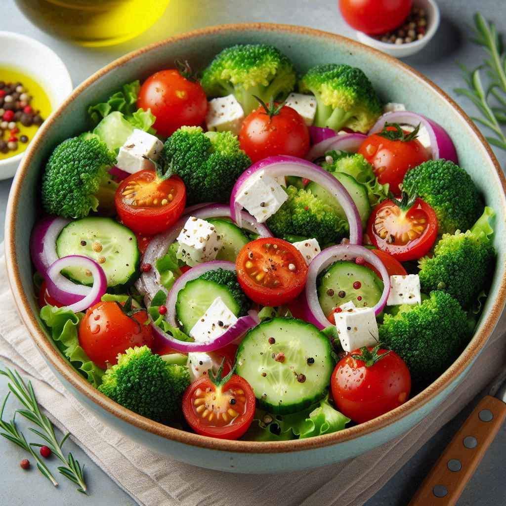

Broccoli Salad

Description
Broccoli salad is a refreshing and nutritious dish made with fresh broccoli
florets. It often includes additional ingredients like red onion, dried
cranberries, sunflower seeds, and bacon bits. The dressing can be creamy
or tang. It's a great side dish for picnics, barbecues, or any meal!
Ingredients
-
1/2 pount bacon
-
2 heads fresh broccoli, cut into bite-sized pieces
-
1 cup crumbled feta cheese, divided
-
3/4 cup sliced raisins
-
3/4 cup sliced almonds
-
1 cup mayonnaise
-
1/2 cup white sugar
-
2 tablespoonds white wine vinegar
Steps
-
Place bacon in a deep skillet and cook over medium-high heat until
evenly brown, 7 to 10 minutes; drain, cool, and crumble.
-
Combine bacon, broccoli, onion, raisins, and almonds together in a bowl;
mix well.
-
To prepare the dressing: Mix mayonnaise, sugar, and vinegar together
until smooth.
-
Stir into the salad.
-
Let chill before serving, if desired.